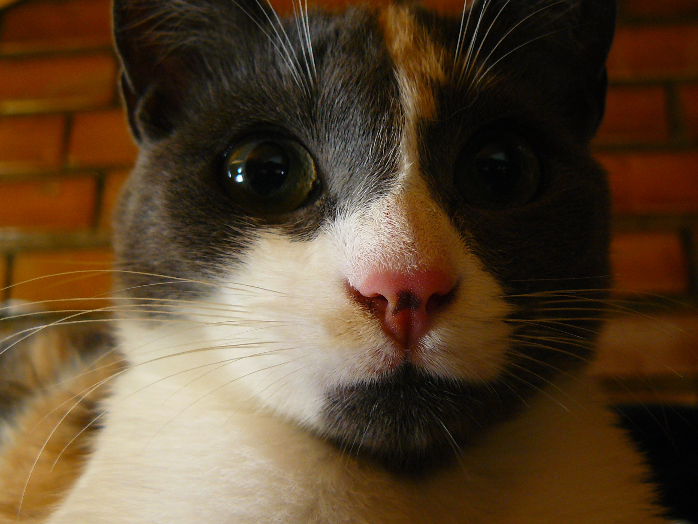

Querido papá
Donde sea que estés
Barrancabermeja
Querido papá,
Espero que esta carta te encuentre bien y te llene de alegría saber de mí, aunque las noticias que tengo que
compartir contigo no son las más alegres. Hoy me encuentro escribiéndote desde un lugar diferente, desde un
hospital. No quiero que te preocupes demasiado, pero ha ocurrido algo inesperado y necesito contarte.
Como sabes, desde que era muy pequeño, mi mayor sueño ha sido convertirme en un futbolista famoso, como los
que
vemos en la televisión y de los que hablamos juntos en nuestras conversaciones. Siempre me has apoyado en
este
sueño, animándome a seguir adelante y nunca rendirme. Sin embargo, algo ha sucedido que ha cambiado todo.
Anoche, mientras dormía, tuve un accidente muy grave. Cuando desperté en el hospital, me di cuenta de que ya
no
tengo mis piernas. Es difícil explicar la mezcla de emociones que estoy sintiendo en este momento. Estoy
triste,
asustado y confundido, pero también estoy tratando de mantener la esperanza y la determinación que siempre
me
has enseñado.
Sé que esto debe ser muy difícil de asimilar para ti, papá. Me duele pensar en la preocupación que esto te
causará, pero necesito que sepas que estoy recibiendo todo el apoyo médico necesario y que los doctores
están
haciendo todo lo posible para ayudarme a adaptarme a esta nueva realidad.
Aunque las cosas han cambiado drásticamente, quiero que sepas que mi sueño de ser futbolista no ha muerto.
Sé
que puede sonar extraño, pero sigo sintiendo la pasión por el fútbol ardiendo en mi interior. Quizás ya no
pueda
jugar de la misma manera que antes, pero estoy decidido a encontrar una manera de seguir adelante, de
superar
este obstáculo y perseguir mi sueño de alguna manera.
Papá, sé que este es un momento difícil para ambos, pero quiero que sepas que siempre llevaré tu amor y tu
apoyo conmigo, sin importar lo que suceda. Eres mi héroe, mi ejemplo a seguir, y aunque las circunstancias
sean difíciles, sé que juntos podemos superar cualquier desafío que se nos presente.
Gracias por ser el mejor padre que podría haber pedido, por estar siempre a mi lado y por enseñarme el
verdadero significado de la valentía y la determinación. Te amo más de lo que las palabras pueden expresar,
y espero poder abrazarte pronto y contarte todo en persona.
Con todo mi amor y gratitud,
Tu ahora arruinado hijo.
